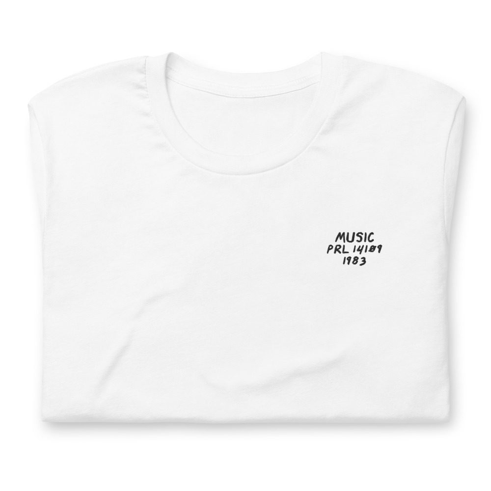
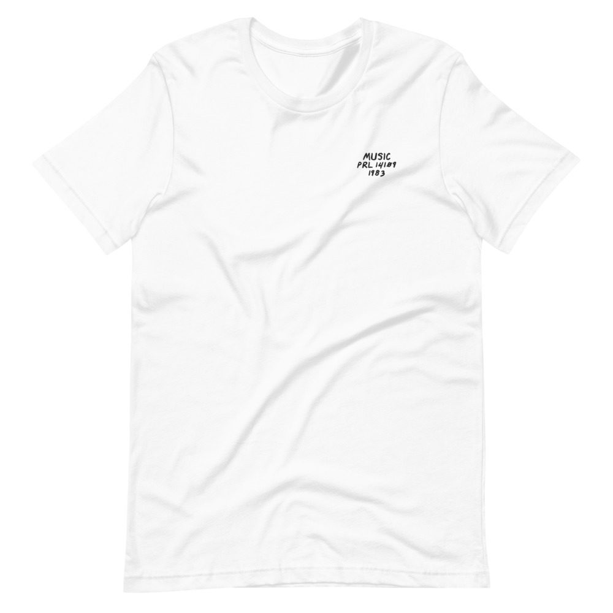

“D” Train – Music
The one with “Keep Giving Me Love.”
LP · Prelude PRL 14109 · 1983
Ungraded, checked before it ships
Comes with its own shirt: a white tee embroidered on the chest with its title, catalog number and year in my handwriting. Pick a size at checkout. It’s made for you and ships on its own.


Buy $58
Play a track
Side 1
- Keep Giving Me Love6:57
- The Shadow Of Your Smile (Love Theme From “The Sand Piper”)6:50
- Are You Ready For Me7:12
Side 2
- Music8:11
- Children Of The World5:21
- Let Me Show You (A World Of Wonder)4:46
- Don’t You Wanna Ride (The D Train)4:50
Guitar
Edward Moore, Elliot Glen, Major Dale Saunders
Harp
Gene Bianco
Lead Vocals
James “D-Train” Williams
Keyboards
Hubert Eaves III, D-Train
Backing Vocals
James “D-Train” Williams, Brenda White King, Curtis King, Norma Jean Wright, D-Train
Bass
Hubert Eaves Jr, IV, Kevin Eaves, James Benjamin
Drums
Howard King, Buddy Williams, Hubert Eaves Jr, IV, Craig Stuart
Percussion
Steve Kroon, Billy King, Tony Eaves
Choir
The Institutional (Young Adult) Choir Of Brooklyn
Produced by Tom Hoover, Hubert Eaves III